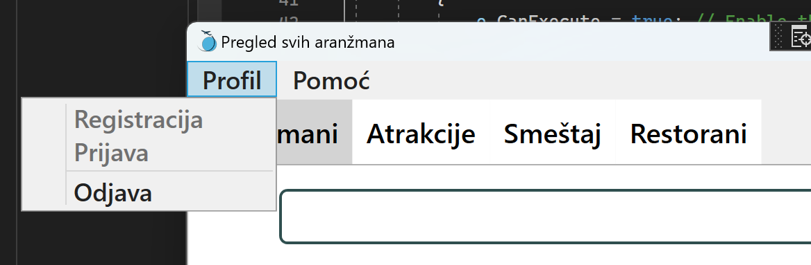
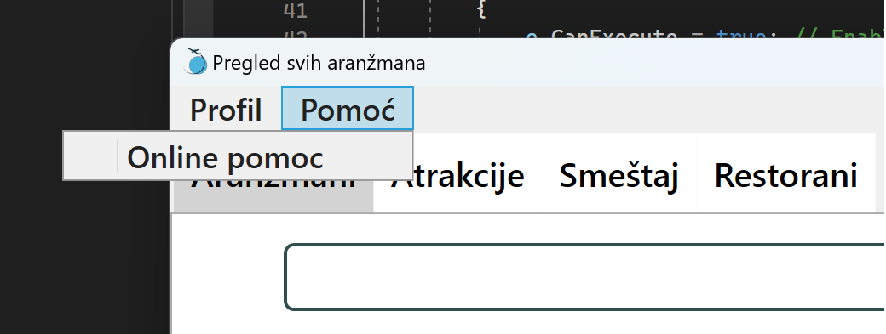
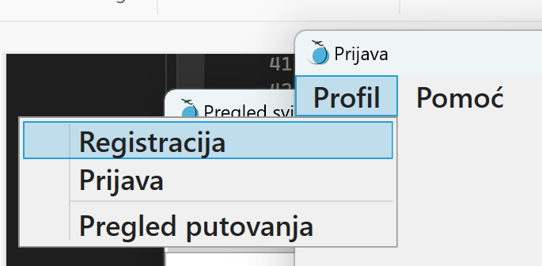
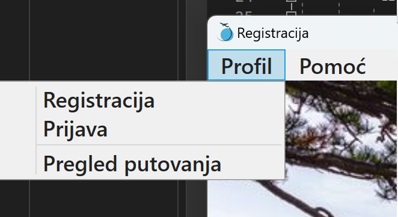

Navigacija pomoću alatne trake
U gornjem levom uglu aplikacije možete pronaći alatnu traku sa dve stavke:
- Profil
- Pomoć
Ako ste ulogovani i želite da se odjavite sa Vašeg naloga, kliknite na "Profil", gde će Vam se otvoriti manji meni sa opcijom "Odjava". Klikom na dugme odjavu, odjavićete se sa svog naloga i otvoriće Vam se prozor za prijavu.

Ako Vam je potrebna bilo kakva pomoć za snalaženje u aplikaciji, klikom na opciju "Pomoć" i odabirom stavke "Online pomoć" otvoriće Vam se prozor sa više detalja i objašnjenja o načinu korišćenja.

Kako doći do registracije i prijave?
Ako se nalazite na prozoru za prijavu, ali trebate prvo da se registrujete, kliknite na opciju "Profil" iz alatne trake i izaberite stavku pod "Registracija". ono će Vam otvoriti formu za registraciju.
Isto važi u obrnutom smeru, ako želite da otvorite prozor za prijavu.

Ako želite da pregledate ponuđene aranžmane kao kupac, bez da se ulogujete, u opciji "Profil" možete pronaći stavku "Pregled putovanja" koja će Vas odvesti na odgovarajući prozor.
